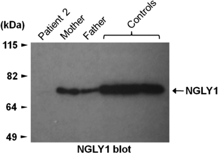
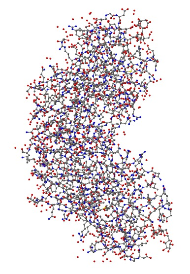
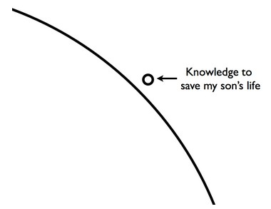

漫漫缉凶路
译者注：原文作者Matt Might是犹他大学的一名助理教授，主要研究程序语言设计、编译器、并行计算等（与我的兴趣完全一致）。他关于如何做研究的系列博文曾给予我很多启发。偶然情况下，看到他的这篇文章，深深的为他的遭遇所同情，也为他的执着探索和深沉父爱而感动，于是翻译过来与大家分享，如果觉得翻译的不好可以直接看原文。
终于
找到了杀害我儿子的凶手
虽然历时三年
但最终
还是找到了
（真实情况并非如此）
需要澄清一点：我的儿子现在仍然好好的活着。
但是我和妻子克里斯蒂娜需要为他的夭折负责。
我的儿子伯特兰患有一种人们从未见过的遗传缺陷疾病。为了探明病因，杜克大学的一个科学家团队对我、妻子和儿子进行了全外显子组基因测序（面向蛋白质进行的全基因组测序的一个变种）。结果发现我的儿子遗传了NGLY1基因的两种不同的突变，这导致他的身体无法合成这种酶。我的儿子是目前已知的唯一一例无法合成这种酶的患者。接下来，我将记录这段曲折的确诊之旅。
这是一个只有科学才能带来希望的故事！
一切正常
除了严重的黄疸之外，伯特兰出生时一切都还算正常。出生后前两个月，伯特兰发育良好。从第三个月起，他的发育开始迟缓，但也还在正常范围内。到第六个月时，他几乎无法控制自己的动作，他看起来摇摇晃晃，一定出了什么问题！
脑损伤
伯特兰八个月大时（我们搬到犹他州后不久）第一次去医院接受检查。他做检查的那天我正好参加学院的首次研讨会，会议结束后，我打开手机，妻子的语音留言和短信如潮水般涌来，我的心脏猛跳不止。医生认为伯特兰的大脑存在损伤，所以克里斯蒂娜预约了下周的MRI。
没有脑损伤
MRI结果显示出一个健康正常的大脑。所以他的情况被升级给一个儿童神经科医师。神经科医师确定伯特兰患有运动障碍症，但是他的情况令人疑惑-他没有表现出舞蹈病或共济失调症的典型症状。医生随后安排了一系列的血液检查（其后几十次血液检查的第一波）。至今每逢节假日我们还给伯特兰最“喜欢”的抽血医师寄一张贺卡。
第一次死亡宣判
检查结果只有一项异常：甲胎蛋白值严重高于他这个年纪的正常值。已知的只有几种疾病会导致这项指标升高。而能同时导致运动障碍和甲胎蛋白升高的只有一种——共济失调毛细血管扩张症（简称A-T）。A-T是一种退行性的、致命的、无法治愈的且无法医治的疾病。我和妻子悲痛欲绝！
你们是亲戚关系？
由于A-T是一种隐性遗传的基因疾病，我和妻子随后被无数次的问到这个问题？
确定你们没有亲戚关系？
我是俄亥俄州农场和北欧的后代，而妻子是波多黎各的后代。
我们可以沿着族谱向回倒退几个世纪——
没有！我们没有任何亲戚关系！
面向程序员的遗传学
我只在高中时接受过两个月正式的生物学教育，所以如果文中存在错误请给我发邮件指出。
为了理解为什么每一个医生都会不断的询问我们两个是否有亲戚关系以及伯特兰最后的诊断结果是多么的罕见，需要读者理解基因和突变的知识。
DNA
基因组包含构建和运行机体的必要信息。基因组被翻译为DNA-由一种仅包含A、C、G、T四个字母的语言编码而成的分子。A、C、G、T对于生命的意义好比0、1对于计算机的意义。在计算中，一个类似于00000100的序列可能意为：原地相加。所以00000100 0001 0010表达的意思就是：将1号寄存器的内容加到2号寄存器中。
密码子和标准遗传密码
绝大多数计算机都运行X86指令集。对于生命来说，也有一种指令集占据统治地位-标准遗传密码（在DNA密码子表中有相关描述）。遗传密码是将独立的氨基酸串联起来组装成蛋白质的标准指令集。遗传密码由称为密码子的指令集合组成。每一个密码子都是由三个字母组成的序列，可能编码了要插入的氨基酸的信息，也可能是停止组装此蛋白质的命令。例如：TTG的意思可能是：插入一个亮氨酸。字母表中的四个字母存在64种可能的组合，但是遗传指令集中仅有25条指令，因为有些密码子编码了相同的氨基酸，还有一些是停止命令。
基因
基因是人类基因组的功能单元（类似于程序中的函数）。每个基因由外显子（涉及蛋白质表达的密码子序列）和内含子（被忽略的序列和代码注释类似）组成。外显子描述了如何把一个氨基酸序列折叠成一个蛋白质。当一个基因被编码到一个蛋白质（通常为酶）中后，酶就会像细胞中的一个函数——将输入分子转换为输出分子。除了特殊情况，人类每一个基因都有两个版本——一个来自母亲一个来自父亲。每一个基因都有功能相似的两个版本为机体的功能表达提供了冗余特性。
突变和进化
基因中的冗余是对突变强有力的对抗。突变是一个生物体的遗传密码中出现的变化。某些突变将一个字母变为另一个。这可能会改变待插入的氨基酸类型，比如将TTT（苯基丙氨酸）变为TTA（亮氨酸），也可能没有发生变化，比如TTA和TTG都表达的亮氨酸。
停止突变
虽然罕见，但突变也可能将一个密码子变为停止指令，这会过早的终止蛋白质的合成。这被称作无意义突变，因为这样合成出来的蛋白质通常不具备正常的功能。
码段突变
某些突变可能会插入或删除任意数目的字母。如果发生改变的字母的数目能被3整除，那么发生变化的码段之后的密码子仍能够被正确的解读，这称之为整码突变。反之，插入或删除之后的密码子将会混乱，这称之为移码突变。多数情况下，基因中突变发生的越晚，合成的蛋白质将具有更多的功能（但随着我们对伯特兰了解的加深，即使在基因的最末端发生的移码突变也会彻底损害合成的蛋白质）。
然后？
突变发生后，突变体存在四种可能：
-
什么也不发生
某些突变不会影响合成的蛋白质的功能。但是，即使突变损害了蛋白质，仍然可能没有任何迹象。如果来自另一个亲本的冗余基因能够合成足够的蛋白质，也会没有任何症状。
这是最常发生的情况。冗余万岁！
-
机能不全
如果冗余的基因无法合成出足够的蛋白质，可能会出现从轻微到致命的症状。
-
有害
如果基因突变合成的蛋白质是有害的，将会出现明显症状。如果一个异常基因产生了问题，就会造成常染色体显性遗传病。
-
进化
如果突变基因合成了更好、更有效的蛋白质，个体将具有更好的适应性，进而会有更高的存活和繁殖概率。
常染色体隐性遗传疾病
类似于A-T这样的常染色体隐性遗传疾病是由位于同一位点的两个突变结合所致。如果原始变异体的两个后代，都携带有变异基因的拷贝，那么这两人的后代将有四分之一的概率会同时遗传变异基因的两个拷贝。这就是为什么许多基因缺陷和特定的群体以及地理位置相关，因为这样的情形下他们拥有共同的变异祖先的可能性会大幅提高。如果一个人遗传了相同变异基因的两个版本，那么他的父母亲很可能是表（堂）兄妹关系。但是克里斯蒂娜和我没有这样的关系，然而伯特兰患有常染色体隐性遗传疾病。
不忠指责
伯特兰长得更像克里斯蒂娜这一点没有任何帮助。经过确认我和妻子没有亲戚关系，接下来的数年间伯特兰的每一任医生都会找机会将妻子拉到一旁，悄悄问她：有没有可能他不是伯特兰的父亲？但问题并不在这儿。
进入空集
随着A-T诊断带来的打击逐渐褪去，我们开始寻找新的可能。几天后，我们确信伯特兰没有患上A-T。即使他的甲胎蛋白值异常增高，并且有伴有运动障碍，但是他的症状和医学文献中的记载并不相符。我们专门测试了A-T基因，正如预期，结果为阴性。十个月大时，能够导致伯特兰出现目前症状的疑似疾病越来越少，而且每有一个新的发现，都会减少一个可能。
各种尝试
几个月之后我们不断有许多小的发现，我们发现了异常升高的ALT和AST，这些指标都指向肝脏功能障碍，但肠胃科医师的全面检查结果否定了这一推测。伯特兰的发育在8月大左右时开始停止，直到今天，他已经4岁了，仍然如此。伯特兰的罕见病情吸引了很多专家的尝试，但都没有成功。
又一次死亡宣判
15个月大时，我们又有了新的大发现。我们在他的尿液中发现了低聚糖（单糖的聚合物）。这个发现立即将结果锁定在很少的一类基因缺陷疾病中——先天性细胞新陈代谢疾病。这一类疾病包括：溶酶体贮积病、酶体贮积症、先天性糖基化病、线粒体病（现在我们知道伯特兰为这一类疾病新增了一种——先天性糖基化障碍）。医生预期伯特兰只能存活两到三年。我们不知道伯特兰患上的究竟是哪一种，但所有可能的疾病都列在下面：
-
Alpha-Fucosidosis
-
Alpha-Mannosidosis
-
Alpha-N-Acetylgalactosaminidase Deficiency
-
Aspartylglycosaminuria
-
Beta-Mannosidosis
-
Galactosialidosis
-
Gaucher Disease
-
Glycogen Storage Disease Type II (GSD II)
-
GM1 gangliosidosis
-
GM2 gangliosidosis
-
GSD II (Glycogen Storage Disease Type II)
-
I-Cell Disease
-
Mucolipidosis II
-
Mucolipidosis III
-
Pompe Disease
-
Psuedo-Hurler Polydystrophy
-
Sandhoff Disease
-
Schindler Disease
-
Sialidosis
选择
除了线粒体障碍之外，这些疾病很可能是由于无法合成细胞正常新陈代谢需要的某种酶所致。理论上，将缺失的酶注入细胞内会阻止病情的进一步发展，但是只有很少数的酶能够人工合成，而且如何将酶注入到所有的细胞内也将是一个巨大的挑战。
（多数分子都将无法通过血脑屏障）
这样，补充缺失的酶的唯一办法只有骨髓移植。
创造嵌合体
骨髓移植后，受体的干细胞将被供者的干细胞所替代。干细胞能够变成各种不同的细胞，因此他们在身体发育和修复方面扮演着重要的角色。随着供者干细胞的扩散，受体变成一种人工合成体，机体的细胞来源于两个不同的遗传体。如果供体的细胞能够合成缺失的酶，那么受体丧失的功能可能会得到修复，或者至少症状能够得到缓解。
杜克大学
在开始寻找低聚糖的数周内，我们进行了一系列血液检查以缩小疑似疾病的范围。同时，我们前往杜克大学拜访了干细胞移植的专家——Joanne Kurtzberg博士。Kurtzberg博士主张在让伯特兰进行高达30%死亡率的骨髓移植手术前先确定他所患的疾病类型。所以我们又拜访了遗传学专家Vandana Shashi博士和Kelly Schoch博士。从那以后我们就开始和这两位专家以及他们的团队进行合作。
癫痫和白质缺失
杜克大学进行了EEG和又一次MRI。他们发现在伯特兰的大脑里存在“奇怪的”，“疑似癫痫的”活动。
（直到今天，伯特兰的的脑电波图仍然吸引大批观众）
MRI结果显示他的大脑存在髓鞘化延迟的症状——他的大脑缺少白质，这些发现说明他可能患有脑白质病变（通常由先天性细胞新陈代谢障碍所致）。
没有选择
离开杜克大学之前，Kurtzberg博士同情但坦率的告诉我：无论伯特兰患上的是哪种疾病，骨髓移植都太迟了。我们彻底崩溃了！
专注治疗
离开杜克后，我们将注意力从诊断转移到治疗上。令人不安的是我们发现伯特兰身上大部分的异常症状实际上是癫痫。事实上，伯特兰患有三种癫痫：肌肉震颤癫痫、意识丧失型癫痫和失张力型癫痫。之后数月，他开始经受强直性癫痫发作带来的持续的痛苦的全身肌肉收缩。伯特兰开始服用开浦兰（一种广泛使用的抗癫痫药物）。
生酮饮食
发现开浦兰无法完全控制他的癫痫症状后，我们开始考虑生酮饮食。生酮饮食是一种需要严格控制的、高脂肪的食物。它可以强迫大脑将酮体取代葡萄糖作为能量的主要摄入来源。伯特兰每摄入一克碳水化合物和（或）蛋白质，需要摄入额外的4克脂肪。生酮疗法已经得到大量研究，并且被广泛应用于临床，但是他的作用机理尚不明确。生酮疗法几乎完全去除了伯特兰身上的失张力发作症状，并且极大的缓解了其他几种癫痫。但对于强直阵挛发作癫痫，我们不得不寻找其他的治疗方案。
没有泪水
有时，某些症状太过明显，以至于我们反倒忽视了。伯特兰大约两岁的时候，我们才注意到他没有眼泪，他会哭，但是没有泪水(可以在维基上搜索Allgrove syndrome)。迄今为止我们已经做了大量的测试，几乎穷尽了各种可能的先天性细胞新陈代谢障碍疾病，因此我们希望出现更多的可能性。
国立卫生研究院
克里斯蒂娜联系了国立卫生研究院失泪综合症的专家—— Stratakis博士。
伯特兰罕见的症状引起了Stratakis博士的兴趣，他邀请克里斯蒂娜和伯特兰飞往NIH与专家小组会面。专家小组推测伯特兰患上的很可能不是失泪综合症，但也可以进行一次基因测试——
结果为阴性。NIH的专家的最后结论是：伯特兰患上的可能是蕾特氏症或者Giedion综合征。虽然和蕾特氏症的症状相似，但进一步的测试结果将这两种推测都给否定了。
促肾上腺皮质激素
痛苦的强直阵挛性癫痫发作越来越频繁，也越来越猛烈，但我们对此束手无策。有相关报道说：对于某些难以治疗的癫痫，高剂量的ACTH可以起作用。非常幸运，ACTH对伯特兰有效。但是，每天两次的激素注射存在副作用，他的体重很快增加了一倍。头发开始变稀并且逐渐出现秃顶的迹象，脸上也开始长出细细的毛发，而且他的情绪一直很狂躁，但是，癫痫的症状消失了。
濒死体验
ACTH和生酮饮食结束的非常突然。ACTH严重损害了伯特兰的免疫系统。几个月后，他出现严重的上呼吸道感染，他仅有两岁的小小的身体内充满了各种液体，使得他连动弹一下都十分困难。他身体的每个部位都出现了肿胀，看起来就像一个气球。我们感觉他就要离开我们了。为了拯救他的生命，我们停止了ACTH和生酮饮食，给他身上插满各种导管、电线，并且服用大量的抗生素。
笑声
伯特兰停止ACTH和生酮饮食后的那天早上，我们听到了从未听过的声音——笑声。尽管浑身肿胀并且有生命危险，但他躺在医院的病床上，仍然发出笑声，每当医院的电视里出现观众笑声时，他都会跟着笑。这是我们第一次在伯特兰身上看到人类的感情，那一刻克里斯蒂娜泪流满面。
风暴中心
伯特兰好转后，癫痫症状消失了大概两个月。他的脑电波图看起来一切正常。没有癫痫的困扰，伯特兰开始学习和发育。对于克里斯蒂娜和我来说，这是生命中最快乐的两个月。
癫痫又回来了
慢慢的，肌阵挛型癫痫又发作了，但其他三种并未发作。拉莫三嗪抑制了肌阵挛型癫痫，但让他变得整天昏昏沉沉。我们又踏上了诊断之路。
肝脏纤维化
由于伯特兰的肝脏指标持续升高，我们同意对他做肝脏活体组织检查。活体组织检查排除了两种怀疑：拉福拉病和Unverricht–Lundborg病（以首例病人和研究者命名），但不幸的是， 伯特兰的肝脏出现了纤维化。胃肠科医师预言：他的肝脏将会逐渐纤维化并最终坏死。他推荐使用熊去氧胆酸，我们决定试一试。
心脏疾病：长QT症
伯特兰在医院期间，心电图结果显示他还患有长QT症。长QT症可能会导致心脏出现严重的心律不齐。长QT症通常由基因缺陷引起，但也可能是药物所致。有一段时间，我们开始调查可能导致他长QT症的先天通道疾病。在这段时间里，大脑、肝脏和心脏在残酷的抢夺伯特兰的生命。
危险的假设
随着各种可能的诊断方法都快被试遍了，我和克里斯蒂娜开始对伯特兰的情况做出一个假设。由于我们两个没有亲戚关系（所以排除了常染色体隐性遗传病的可能性）并且双方都没有基因疾病史，因此我们怀疑伯特兰的病很可能是一个全新的突变造成的。开始时我们假设伯特兰的突变是独一无二的，和我们没有任何关系，这样我们再要一个孩子的话就不会有任何风险，但是我们是错误的。反之，如果假设伯特兰的突变只是很罕见的呢？我们为此制定了一个计划来验证这个假设。
与遗传学家的一顿饭
我设法和犹他大学的遗传学家Lynn Jorde博士一起共进晚餐。我询问了对我、克里斯蒂娜和伯特兰三个人的基因组进行测序的可能性。对基因组测序可以揭开一个有机体的遗传密码（对于人类来说大约有31亿个字母）。如果我们有了测序结果，就可以找到伯特兰和我们不同的突变位置。但是说起来容易做起来难，而且就算成功了，接下来也还要面对各种困难。
测序中的错误
测序工作存在错误。就是说，任何的测序结果都存在伪突变现象，假设错误率为1/10000，那么一个给定的序列可能有310000个伪突变。重复测序可以减少错误率，但是会增加成本。在餐桌上，我估算了下，大约需要50万美元才能得到一个可信的测序结果。Jorde博士充满歉意的表示我的计算无误。
接下来呢？
就算我们得到了测序结果，接下来呢？我们还要研究每一个突变对蛋白质合成和功能的影响-这几乎是一个无法完成的工作。但是，理论上，还是可行的。
一个机会：外显子测序
在伯特兰备受煎熬的日子里，杜克大学的Shashi博士和Schoch博士和我们始终保持着联系并且帮助我们一起验证各种假设。他们有一种强烈的直觉：伯特兰患上的是一种还未发现的基因缺陷疾病。他们设计了一种更加巧妙的方案来检验这个假设。他们推荐对我们三人使用一种新的技术——外显子测序。人类DNA中大约只有2%（称为外显子）参与编码蛋白质。据估计大部分的基因缺陷疾病都来自于这2%中的突变。外显子测序可以以更加经济的对DNA进行测序。如果突变存在于伯特兰的外显子，那么我们就可以找到致命的突变。伯特兰和其他11名无法被确诊的孩子一起参加了杜克大学的实验计划。
躲开了两枚子弹
对伯特兰使用熊去氧胆酸后，他肝脏的各项指标开始出现稳定的好转，一年后各项指标都恢复了正常——伯特兰将不会死于肝功能损伤。经过对心脏的多次化验，伯特兰的心脏医师确信他的长QT症是由药物所致，是在治疗他的上呼吸道感染期间使用的红霉素导致了他的长QT症。
角膜糜烂
伯特兰暂时摆脱远离肝脏疾病和长QT症困扰后，他开始出现严重的眼部感染。由于抗生素无效，因此需要做外科手术来清除他角膜的脓汁。由于缺乏足够的泪水，他的角膜出现磨损现象。在瞳孔下方出现了疤痕——这让他视力出现浑浊但还不至于模糊。在眼科医生的建议下，我们每两个小时向他的眼睛里滴一些润眼液。这之后，他的眼睛开始出现好转，但哪怕有半天时间忘记滴眼药也会让他出现延续数周的眼部感染和结痂。伯特兰一刻也离不开一个可信赖的受过专业培训的护工。
怀孕
杜克大学的实验开始一个月左右，克里斯蒂娜怀上了我们的第二个孩子。我们意识到这个未出生的孩子也可能患上和伯特兰相同的基因疾病。但我们决定，无论结果如何，都不会终止妊娠（伦理委员会规定出于伦理道德怀孕家庭不允许参加这样的实验）。
干细胞
外显子实验进行的时候，我们继续治疗伯特兰的癫痫。这个时候有个假设：伯特兰并非全突变型（当他还只是几十个细胞的时候，其中的一个发生了变异）。这种疾病有专门的术语——体细胞嵌合(患者体内有两种非常相似但不同的基因源)。在这样的假设下，我们决定赌一把。我们曾将伯特兰出生时的脐带血存库，而杜克大学的Kurtzberg博士正在实验用干细胞点滴疗法来治疗类似于脑瘫这种儿童大脑疾病，并且由于点滴注射自身的干细胞是无害的，因此我们决定试一试。我们的想法是：如果突变没有影响这些脐带血干细胞，那么他们很可能会开始修复大脑损伤并且合成缺少的酶，而且即使这些干细胞没有合成酶，也有理由相信他们可以阻止甚至逆转大脑中白质的减少。
克利夫兰医院
由于伯特兰癫痫的病灶有多处，我们被告知最好不要做手术。但是，为了确保万无一失，我们前往了克利夫兰医院——使用外科手术治疗儿童癫痫最好的医院。虽然克利夫兰医院确定伯特兰的情况不适合进行外科手术，但他们又开了一些抗癫痫的药物并且效果非常显著，而且克利夫兰医院的MRI结果令人震惊——伯特兰大脑中的白质暂时停止了减少。虽然仅凭这一结果不足以证明干细胞点滴疗法起作用了，但至少令人鼓舞，说明干细胞疗法很有前途。
第一个突变
伯特兰3岁半时（他的妹妹维多利亚出生前一周），Shashi博士的团队给我们打了个电话，由于伦理道德委员会的规定， 他们没有直说，但称所有的现象似乎都说明维多利亚不会患上伯特兰的基因疾病。他们希望能够寄一份克里斯蒂娜父母的血液样本（没要我父母的）。我们立即推断：杜克大学的团队发现了X染色体中的一个致病突变。如果X染色体携带了突变基因，那么女性通常不会受到影响，因为她们还有一条X染色体可以弥补。而如果男性的X染色体出现突变，通常会造成严重的后果。结论就是如果伯特兰的疾病是由X染色体的突变造成，那么维多利亚可能是一个携带者，但情况至少要比伯特兰好。我们一度狂喜，可是杜克大学的结论后来证明是错误的。
错误的突变
维多利亚出生后一周克里斯蒂娜父母的检测结果出来了。克里斯蒂娜父亲的X染色体中携带了同样的突变。虽然这个这个突变能够影响1000多个基因，并且似乎能够解释伯特兰的部分症状，但克里斯蒂娜父亲的健康仍然将这个突变排除掉了。
缺乏维生素
有时一个治疗方案太过常见反而导致我们容易忽视。克里斯蒂娜在寻找干眼症的成因时偶然发现了维生素贫乏这个记载。虽然伯特兰每天都要补充多种维生素，但化验结果显示伯特兰肝脏里储存的维生素远低于正常值。于是我们每天都给他服用大剂量的维生素，逐渐的，伯特兰的维生素指标回到了正常值。从那以后，伯特兰终于可以有眼泪了，虽然不多，但足够了。不幸的是，由于角膜瘢痕，伯特兰没法眨眼，所以他仍然需要滴眼液的润滑，但次数相比以前已经大为减少。
确诊结果：缺乏NGLY1
伯特兰四岁半时，杜克大学给我们来了电话，外显子实验有了最终的结果，我和克里斯蒂娜各自都携带了一个NGLY1基因的突变。我的8号外显子为停止突变，而克里斯蒂娜的最后一个外显子出现了移码突变，我和克里斯蒂娜各自都有一半不正常的NGLY1基因，而伯特兰遗传了我们两个的突变，导致完全无法合成这种酶。

蛋白质印迹图中的黑条代表了NGLY的数目，伯特兰为图中的patient 0
他是人类目前已知的唯一一例缺少这种酶的患者。

N-Glycanase 1在将错误折叠的蛋白质去糖基化过程中扮演十分重要的角色，可以回收并重组氨基酸。伯特兰的细胞中累积了大量错误折叠的蛋白质。
几率
由于我和克里斯蒂娜携带的突变基因都是千分之一的概率，而且同时携带这种突变基因的夫妇的孩子有四分之一的概率患上这种基因疾病，因此可以估算出大约400万个夫妇才会出现一例类似伯特兰的情况。现在我们知道维多利亚有四分之一的概率会同时遗传这两个突变基因——但幸运的，她一个也没有遗传！
尽管不到一岁，维多利亚已经可以将伯特兰推到校车的停靠点
新的出路
我们同克里斯蒂娜的父亲Manuel Casanova博士以及好朋友Karen Ho博士一起，开始研究NGLY1缺乏会带来的后果。Ho博士提出假设：NGLY1的缺乏会导致内质网压力升高，使用抗氧化剂可以有效减缓这种压力。Casanova博士集中于如何能够忽略对停止突变的解读，从而激活NGLY1的功能。与多伦多大学的研究人员会谈后，Casanova博士将庆大霉素锁定为最有希望的候选药物，因其已经以相同的机理在治疗囊胞性纤维症方面取得了显著地效果。
合成NGLY
但是在杜克大学会面后不久，克里斯蒂娜的研究“中了大奖”，在杜克大学和盐湖城的团队不知情的情况下，NGLY1的一个变种已经可以合成。
（健赞公司拥有该项合成技术的专利）
合成的NGLY1已经在实验室里证明了其有效性，而且二十年前人们就掌握了这项合成技术。你可以以244美元的价格批量订购。
今后的路
不幸的是，我们不能马上就订购然后开始给伯特兰注射。因为我们还要获得食品药物管理局的许可，还需要健赞公司的合作。虽然伯特兰有生命危险，癫痫也在恶化，白质还在减少，但我们必须首先确定这种药物是安全的。而且就算完成了上面所有的步骤，我们还需要不断的调整这种药物的成分以提高其效用。还需要研究能够携带这种酶穿越血脑屏障的伴侣分子。还有许多许多的未知在前方等着我们。但是伯特兰已经命悬一线，所以我们必须去探索一个又一个未知的问题！
尾声
在三年前无比悲伤的宣布发现低聚糖的博客里，我们对伯特兰做出了如下承诺：
我们会试遍所有可能，如果都失败了，我们继续去尝试不可能！
但是什么是不可能？在图解说明什么是博士里，我谈到在人类知识的边界凿一个缺口。我的故事讲述了这样一个缺口——凌乱但揭示了当代科学进步的本质。 科学是系统的将未知转变为已知的过程，也必然是将不可能转换为可能的过程。那篇文章写完后不久，我特地增加了一个结语以强调这种转换的重要性。

已经有了新的突破，我们已经非常的接近目的地，还需要做的就是不断探索前进！
comments powered by